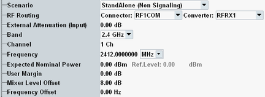
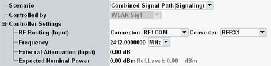
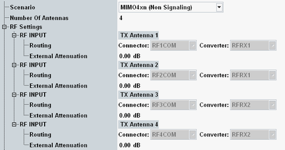
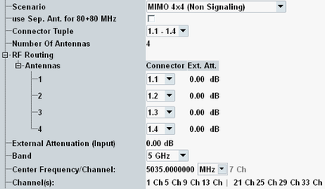
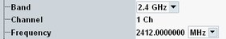
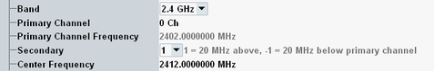
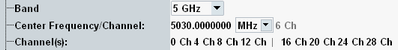

The following parameters configure the RF input path.

The multi-evaluation measurement is used standalone.
Remote command:The multi-evaluation measurement is combined with an instance of the WLAN signaling application (option R&S CMW-KS65x). The WLAN signaling application establishes a connection to the DUT. The additional parameter "Controlled by" selects the signaling application instance.
In this scenario, some parameters of the measurement are set or restricted by the signaling instance. The configuration tree changes accordingly:

The multi-evaluation measurement settings are remembered in the background and enabled again, when switching back to the standalone scenario.
Connection status information of the signaling application is displayed at the bottom of the measurement GUI. Softkeys and hotkeys provide access to the settings of the signaling application and allow you to switch the signal on or off, see "Additional Softkeys and Hotkeys".
For additional information, see "Combined Signaling and Measurement".
Remote command:This scenario is only available on an R&S CMW500/2xx with BB Meas. It is automatically activated if standard "802.11n" and receive mode "Switched MIMO" are selected.
Switched MIMO measurements use up to four RF input paths. The configuration tree changes accordingly:

See also "Switched MIMO Measurements"
Remote command:These scenarios are only available on an R&S CMW100.
They can be selected if the receive mode "Switched MIMO" is selected. MIMO 2x2 is available for standard "802.11n", "802.11ac", and "802.11ax". MIMO 4x4 is available for standard "802.11n" and "802.11ac". MIMO 8x8 is available for standard "802.11ac".
The configuration tree changes accordingly:

See also "Switched MIMO Measurements".
Remote command:This setting is only displayed for 802.11ac 80+80 MHz signals. It is only available for R&S CMW100/CMW with MUA.
Enable the checkbox if your DUT uses separate antennas for the two segments. You can then connect the antennas to different RF connectors and avoid using a combiner.
Remote command:This setting is only available on an R&S CMW100.
It selects the connectors to be reserved for the selected switched MIMO scenario.
The number of receive antennas can be further limited using "Number of Antennas".
Remote command:If a switched MIMO scenario is active, this parameter specifies the number of TX paths of the DUT that are connected to the R&S CMW.
Remote command:Selects the input path for the measured RF signal, i.e. the input connector and the RX module to be used.
In the "MIMO4xn" scenario, four input paths are available, but currently the assignment between RF connectors and converters is fixed.
In the "MIMO 2x2" and "MIMO 4x4" scenarios, you can assign DUT antennas to RF input connectors. Configure first the connector tuple and the number of antennas. Then assign a different RF connector to each DUT antenna.
In the standalone (SA) scenario, these parameters are controlled by the measurement. In the combined signal path (CSP) scenario, they are controlled by the signaling application.
ROUTe:WLAN:SIGN<i>:SCENario:... (CSP)
Defines the value of an external attenuation (or gain, if the value is negative) in the input path. The power readings of the R&S CMW are corrected by the external attenuation value.
The external attenuation value is also used in the calculation of the maximum input power that the R&S CMW can measure.
If a correction table for frequency-dependent attenuation is active for the chosen connector, then the table name and a button are displayed. Press the button to display the table entries.
In the "MIMO" scenarios, you can configure a connector-specific attenuation value.
All configured attenuations are added: global external attenuation + connector-specific attenuation + active frequency-dependent attenuation table.
In the standalone (SA) scenario, this parameter is controlled by the measurement. In the combined signal path (CSP) scenario, it is controlled by the signaling application.
Using the band and channel settings, you can specify the input signal in terms of standard WLAN channels in the 2.4 GHz, 4 GHz or 5 GHz band. The center frequency of the overall channel can also be set directly, which allows for non-standard WLAN channels. If a channel frequency corresponds to a channel index number, this number is displayed.
- The available channel index numbers and related frequencies depend on the selected band.
- The R&S CMW does not limit the set of available channels based on the selected standard, nor does it enforce any regulatory restrictions. Exception: The 4-GHz band can only be configured for 802.11n.
- Measuring signals above 3.3 GHz requires a 6 GHz option.
- For 5 MHz, 10 MHz or 20 MHz signal bandwidth, there is only a single channel. "Frequency" sets the center frequency of the channel.

Frequency settings for 20 MHz IEEE 802.11n channel - A 40 MHz IEEE 802.11n signal consists of a primary 20 MHz channel and a secondary 20 MHz channel that is one of the non-overlapping channels right above ("Secondary Channel": 1) or right below ("Secondary Channel": -1) the "Primary Channel".
The frequency offset between primary and secondary channel is ±20 MHz. The secondary channel number is ±4 (if it is in the allowed channel number range).
"Center Frequency" sets the center frequency of the 40 MHz bandwidth.
Frequency settings for 40 MHz IEEE 802.11n channels - An IEEE 802.11ac or 802.11ax signal with 20 MHz, 40 MHz, 80 MHz or 160 MHz bandwidth consists of 1, 2, 4 or 8 adjacent, non-overlapping 20 MHz channels, respectively.
Setting one of the 20 MHz channel indices automatically adjusts the remaining ones.
"Center Frequency" sets the center frequency of the total bandwidth. For IEEE 802.11ac and 80+80 MHz signals, it sets the center frequency of the left segment.
Frequency settings for 80+80 MHz IEEE 802.11ac channels
In the standalone (SA) scenario, these parameters are controlled by the measurement. In the combined signal path (CSP) scenario, they are controlled by the signaling application.
Sets the analyzer in accordance with the nominal power of the RF signal to be measured. The nominal power is the average output power at the DUT during the measurement intervals where the RF transmitter is on. The "Ref. Level" is calculated as the expected peak power at the output of the DUT:
Reference level = expected nominal power + user margin
Note: The actual input power at the connectors must be within the level range of the selected RF input connector; refer to the data sheet. With correctly configured power settings, the input power equals the "Reference Level" minus the "External Attenuation (Input)" value.
In the standalone (SA) scenario, this parameter is controlled by the measurement. In the combined signal path (CSP) scenario, it is controlled by the signaling application.
Margin that the R&S CMW adds to the "Expected Nominal Power" to determine its reference power ("Ref. Level"). The "User Margin" is typically used to account for the known variations of the RF input signal power, e.g. the variations due to a specific channel configuration.
The appropriate values depend on the configuration of the received WLAN signal, e.g. on the modulation scheme.
Remote command:Varies the input level of the mixer in the analyzer path. A negative value reduces the mixer input level. A positive value increases it. Optimize the mixer input level according to the properties of the measured signal.
Mixer level offset | Advantages | Possible shortcomings |
|---|---|---|
< 0 dB | Suppression of distortion (e.g. of the intermodulation products generated in the mixer) | Lower dynamic range (due to smaller signal-to-noise ratio) |
> 0 dB | High signal-to-noise ratio, higher dynamic range | Risk of intermodulation, smaller overdrive reserve |
In the standalone (SA) scenario, this parameter is controlled by the measurement. In the combined signal path (CSP) scenario, it is controlled by the signaling application.
Positive or negative frequency offset to be added to the specified center frequency of the RF analyzer.
Remote command: